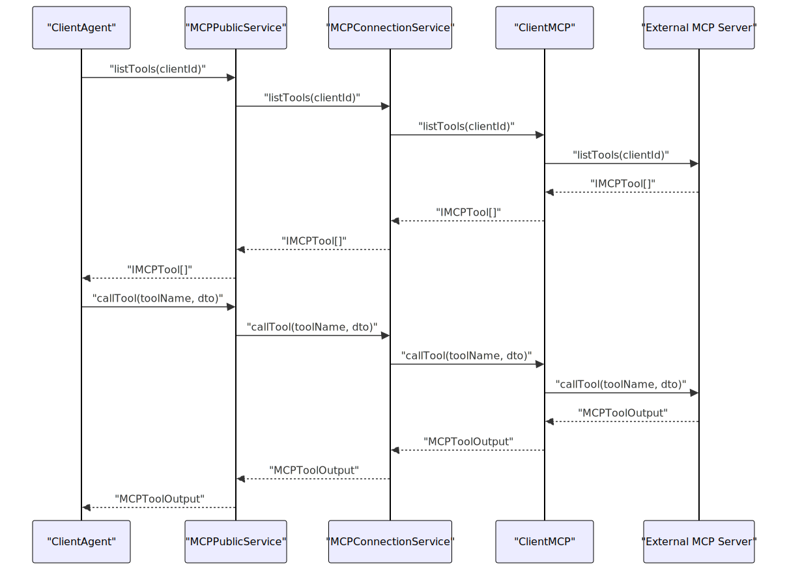
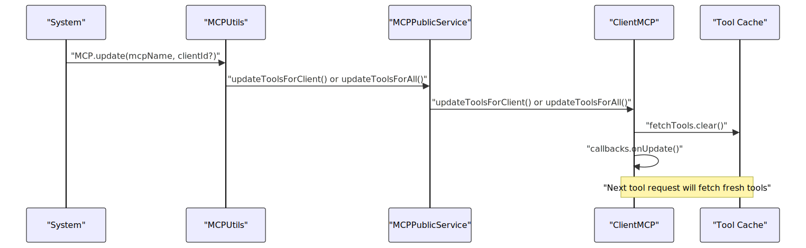

This page covers the creation and integration of tools within the agent-swarm-kit framework. It explains how to create custom tools using addTool, integrate with external Model Context Protocol (MCP) servers, and handle tool execution patterns throughout the agent lifecycle.
For information about agent navigation between agents using tools, see Navigation System. For details about the MCP protocol implementation, see Model Context Protocol (MCP).
The framework provides the addTool function for creating custom tools that agents can use during conversations. Tools are defined with validation logic, execution functions, and OpenAI function schemas.

Tool Definition Components
| Component | Purpose | Required |
|---|---|---|
toolName |
Unique identifier for the tool | Yes |
call |
Execution function with business logic | Yes |
validate |
Validation function for parameters | Yes |
type |
Tool type (always "function") | Yes |
function |
OpenAI function schema definition | Yes |
Tools use OpenAI-compatible function schemas to define their parameters and descriptions:

The framework supports integration with external MCP servers, allowing agents to access tools implemented in various languages and environments.


Tools are executed within the context of agent conversations, with proper error handling and output management.

The framework passes comprehensive context information to tool execution functions:
| Parameter | Type | Description |
|---|---|---|
toolId |
string | Unique identifier for this tool call instance |
clientId |
string | Client session identifier |
agentName |
AgentName | Name of the executing agent |
params |
T | Tool-specific parameters from LLM |
toolCalls |
IToolCall[] | All tool calls in current batch |
abortSignal |
TAbortSignal | Signal for cancelling execution |
isLast |
boolean | Whether this is the final tool in the batch |
The framework provides comprehensive error handling for tool execution failures.

Tools can provide dynamic function schemas based on the executing agent:

MCP tools support dynamic updates without restarting the system:

Tools can return different types of outputs:
| Output Type | Behavior | Use Case |
|---|---|---|
string |
Automatically committed to conversation | Simple responses |
undefined |
No output committed | Side effects only |
void |
No output committed | Fire-and-forget operations |
Tools can be executed in isolated contexts using the fork mechanism:
